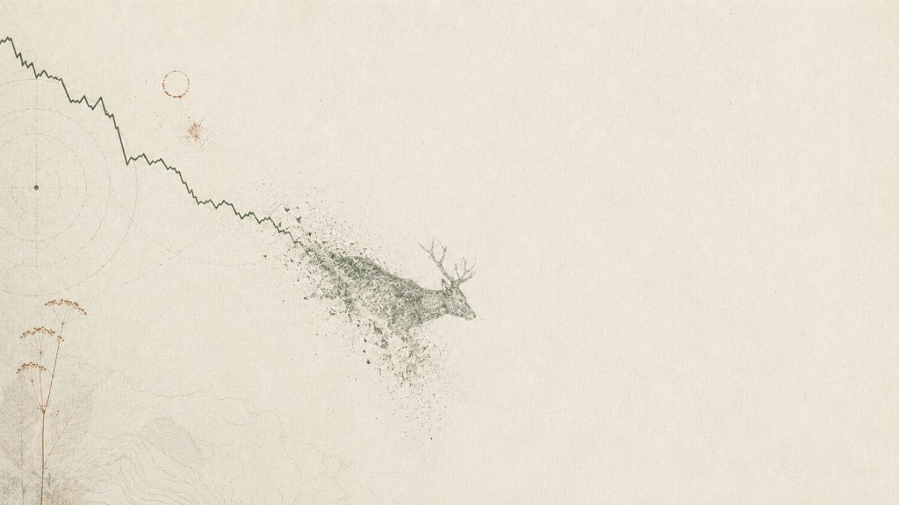

ACT I · 第一幕
—
1970→2020 · 全球种群指数
从100跌到13，万物沉入长寒 Fifty Years of Falling
地球生命力指数把 — 条监测记录，压缩成一条曲线。1970 年，一切从 100 开始；半个世纪后，全球中位数停在谷底——这不是某个物种的偶然失手，而是整张地球脉搏的系统性退场。
数据加载中…… 地球生命力指数 · 趋势方向统计
—
在左侧图表上移动鼠标，按年份读取指数——曲线会说话，但很少大声。

WWF Living Planet Index · 1970–2020 · 动物数据
从1970到今天，一部正在归零的种群档案
「万物」曾是这个星球的默认状态；当监测指数跌至 13，有些名字只剩下 2——One物，不是修辞，是数据。
Enter Story进入叙事 ↓Field Note·2020 监测读数
五十年，指数从 100 走到 13；有些名字，只剩 2。
One species, one number, one planet
数据来源：WWF Living Planet Index · IUCN 红色名录 · Palmer 企鹅监测
ACT I · 第一幕
1970→2020 · 全球种群指数
地球生命力指数把 — 条监测记录，压缩成一条曲线。1970 年，一切从 100 开始；半个世纪后，全球中位数停在谷底——这不是某个物种的偶然失手，而是整张地球脉搏的系统性退场。
数据加载中…… 地球生命力指数 · 趋势方向统计
在左侧图表上移动鼠标，按年份读取指数——曲线会说话，但很少大声。
ACT II · 第二幕
区域最大降幅
全球均值是统计学上的安慰剂。大洋洲五十年跌去近九成，亚洲、非洲各走各路；唯一逆势上扬的，是国际水域的 +33.2%。同一张地球，不同大陆，写着完全不同的结局。
同一条曲线，在不同经纬度上，意味着繁荣、停滞，或消失。 LPI 区域变化 · 1970→2020
点击区域线条，高亮这片大陆五十年间的命运分叉。
ACT III · 第三幕
全球最少种群数
曲线尽头是名字，不是百分比。在全球最濒危的物种档案里，有些计数已经小到难以直视——不丹藓只剩 2 个亚种群，赤鳍蓝眼鱼只剩 2 条，斑鳖只剩 3 个个体。威胁的名字各不相同，结局却指向同一个方向。
南方周末曾写：「野生种一龟难寻。」在这里，有些物种连「一」都快要数不出来了。 极危物种百种档案 · 本项目数据
点击威胁条形，筛选下方中文物种卡片。
第四幕
IUCN 受威胁物种
205 份动物档案铺开一道 IUCN 光谱：68 种仍标注「无危」，却有 88 种已踩在极危、濒危、易危的红线上。保护等级不是贴纸，而是距离灭绝还有几步的刻度尺。
无危与极危之间，隔着的不是一道墙，而是一段正在变短的时间。 Animal Information Dataset · IUCN Status
悬停等级条形，读取每个 IUCN 等级有多少物种。
ACT V · 第五幕
Palmer 企鹅监测
宏观曲线向下时，微观身体先发出信号。Palmer 群岛 3,430 只企鹅的体重与健康指标，记录着生态系统最细小的偏移——巴布亚企鹅 40.9% 超重，阿德利、帽带也在改写各自的体重曲线。问题，往往先写在脂肪里。
想衡量生物多样性，不妨先给动物称一次体重。在这里，体重就是警报器。 Palmer Penguins Extended Dataset
切换健康筛选，柱上百分比即身体信号。
本项目以四套数据集为底，串联「宏观趋势—区域落差—物种个案—保护等级—微观体征」五幕叙事。以下说明数据来源、处理方法与人机协作分工，供读者核阅与复现参考。
第一幕按年份对物种指数取中位数聚合，基准年 1970 = 100，避免个体数、密度、出现率等不同监测单位直接混加。第二幕取 1970 与 2020 两个端点计算区域相对变化，坡度图按降幅排序。第三幕威胁标签经关键词映射与频次合并，种群数量为档案文本解析的近似值，仅用于叙事可视化。第四幕按无危→极危顺序编码 IUCN 等级。第五幕以 2007 年同类雌性企鹅体重 95% 置信区间为健康基准，统计超重与偏瘦占比。
数据集清洗、JSON 导出、滚动叙事骨架与五幕图表由 AI 辅助实现；叙事主线、数据口径、中文物种名与威胁译名由人工审核定稿。标题押韵句式参考普利策解释性报道，正文参照南方周末特稿的层层递进，图表注解力求口语化、可被非专业读者读懂。经可读性测试，视觉方案从 3D 地形、桑基图等高冲击形式，回归折线、坡度、横向条形等「先讲清楚再好看」的图表。完整 Prompt 策略与迭代记录见 ai-collaboration.md。
FDU Journalism · AIGC Narrative Viz Sprint · 2026.06.13